A calm eco-inspired stay with quality rooms, warm dining, poolside leisure, meeting facilities, and easy access to Western Uganda experiences.
Welcome
A calm hotel base for rest, business, and exploration.
Fort Arch Eco Lodges is located at Harubaho off Kamwenge Road in Fort Portal, offering quality accommodation, reliable service, and a peaceful atmosphere for both leisure and business guests.
Guests enjoy modern rooms, strong security, warm hospitality, and convenient access to Kibale Forest, crater lakes, cultural sites, and the greater Rwenzori tourism circuit.
The positioning
Fort Arch is a hotel-first experience, with nearby nature and cultural attractions adding destination value.
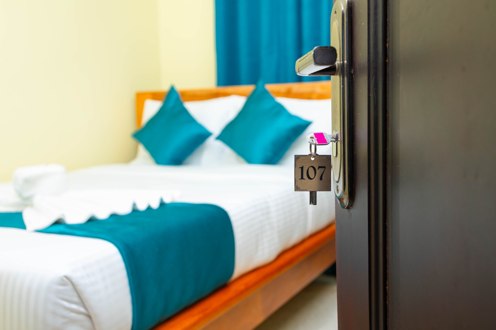
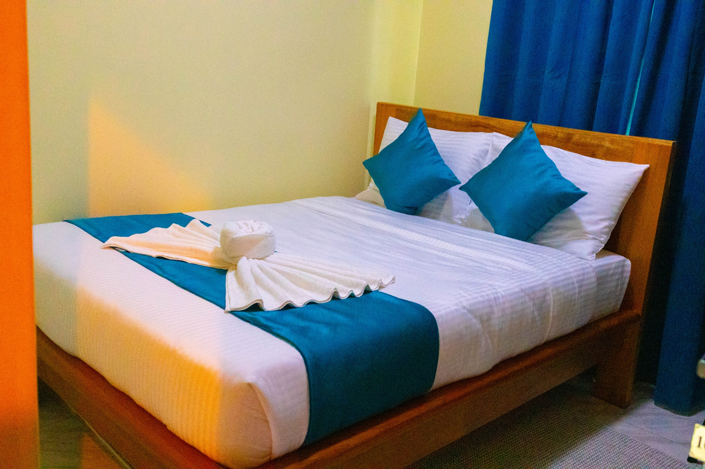
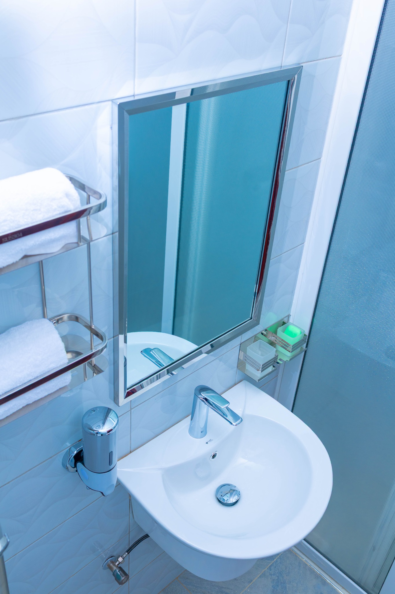
Accommodation
Rooms for comfort, privacy, and easy stays.
The rooms are designed for restful nights, short business stays, family travel, and practical stopovers in Fort Portal.
Standard SingleUGX 150,000
Standard DoubleUGX 200,000
Executive SingleUGX 250,000
Executive DoubleUGX 300,000
Comfortable bedding and clean room setup
High-speed internet, intercom, and room service support
24-hour hot water, tea and coffee station
Complimentary swimming pool access
Dining, Bar & Leisure
Fresh dining, warm lounge energy, and poolside moments.
Fort Arch brings together restaurant service, a stylish bar, comfortable lounge spaces, and a refreshing pool area so the stay feels complete from breakfast to evening wind-down.
Cuisine
Continental, English, French, Italian, Indian, and African dishes prepared for a range of guest preferences.
Leisure
Well-treated pool water, attentive pool attendants, cocktails, refreshments, and calm outdoor atmosphere.
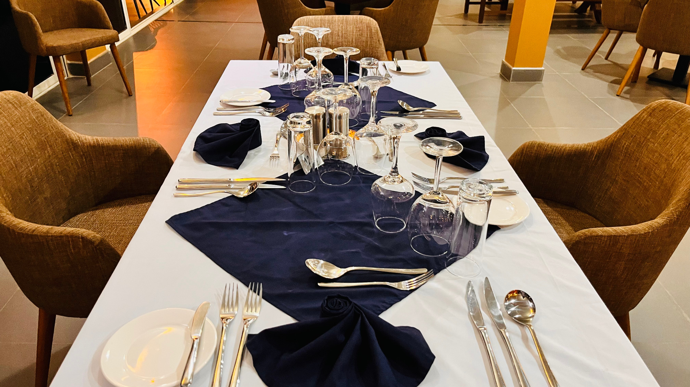
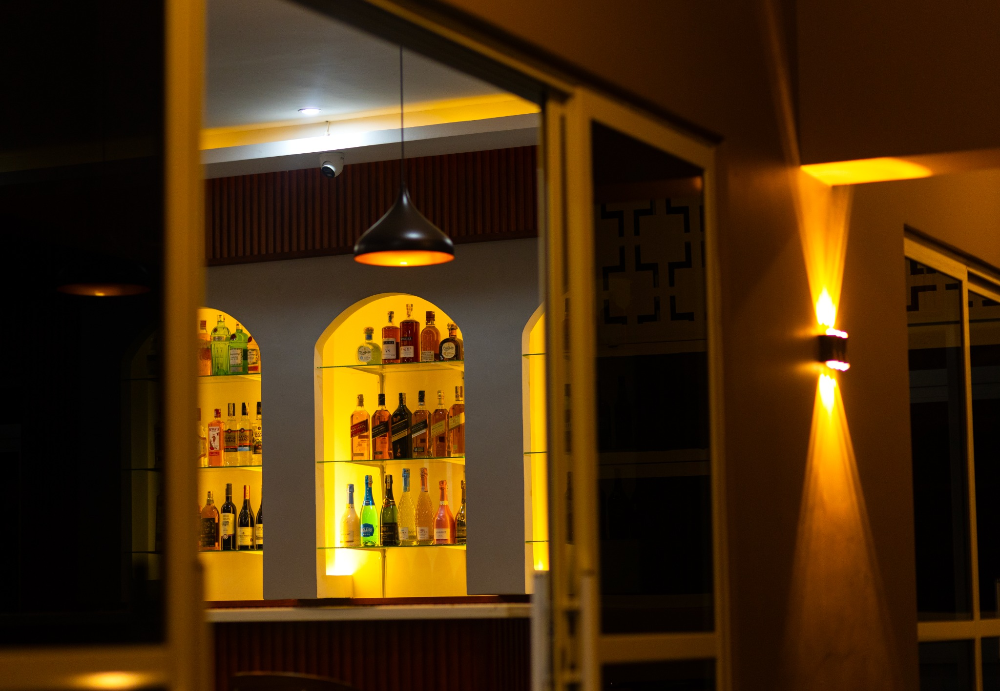
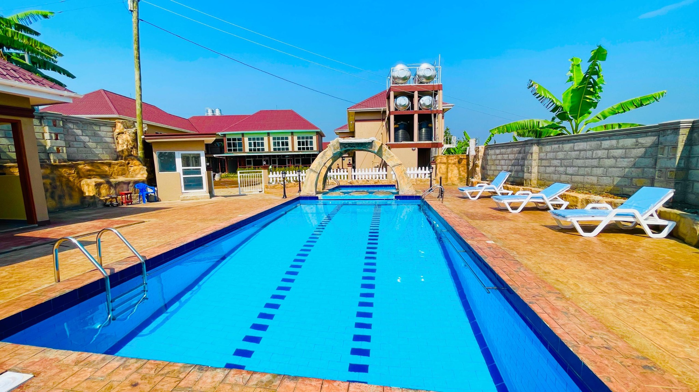
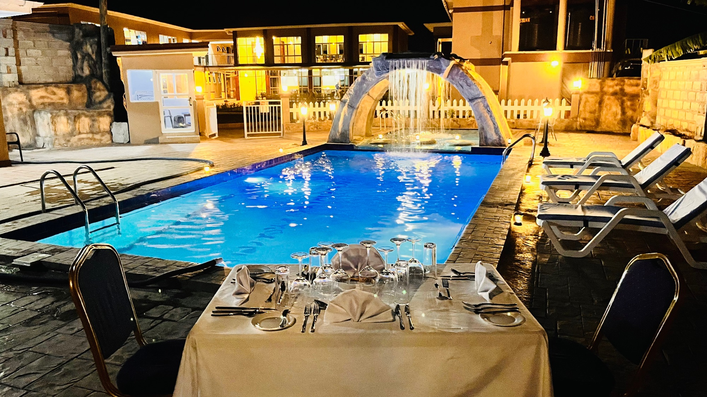
Conference & Guest Care
Professional hosting with dependable service.
Fort Arch supports meetings, workshops, corporate retreats, and group stays with the convenience of accommodation, dining, and service coordination in one place.
Meeting toolsWi-Fi, PA system, projector, screen and flip charts.
CateringTea breaks, snacks, juice, mineral water and lunch service.
Guest supportLaundry, parking, security and attentive staff.
Best fitTrainings, board meetings, retreats and small conferences.
Fort Portal Base
Stay comfortably, then step into Western Uganda.
Fort Arch can help connect guests with reliable local tour guidance for selected nature and cultural experiences across Fort Portal, Kibale, and the wider Rwenzori region.
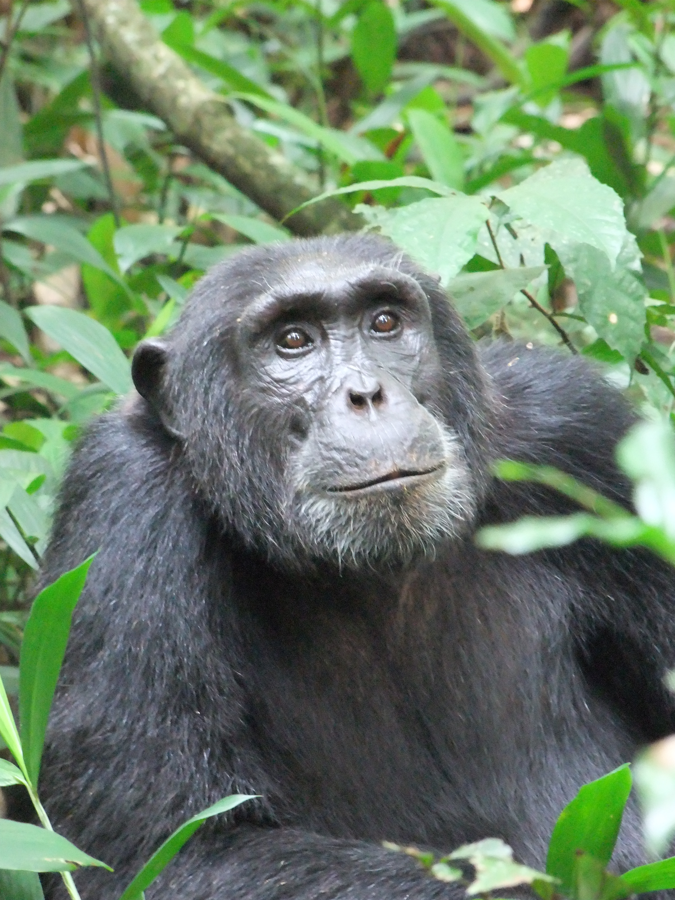
Kibale ForestChimpanzee trekking, primates, forest walks and birding.
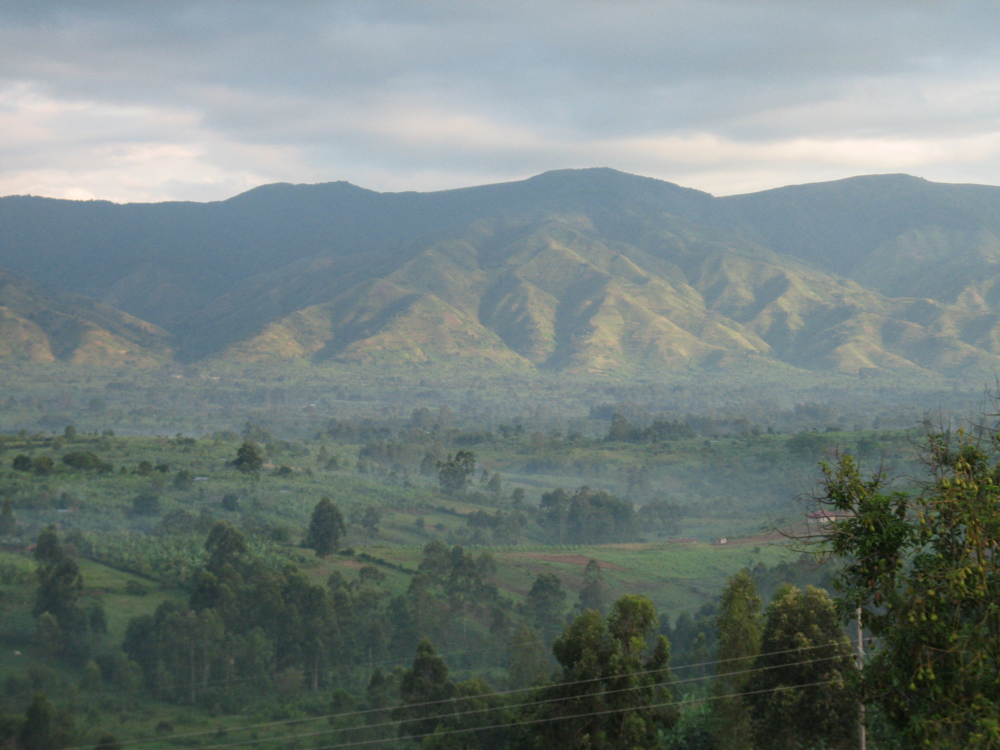
Rwenzori MountainsMountain scenery, hiking routes, alpine vegetation and photography.
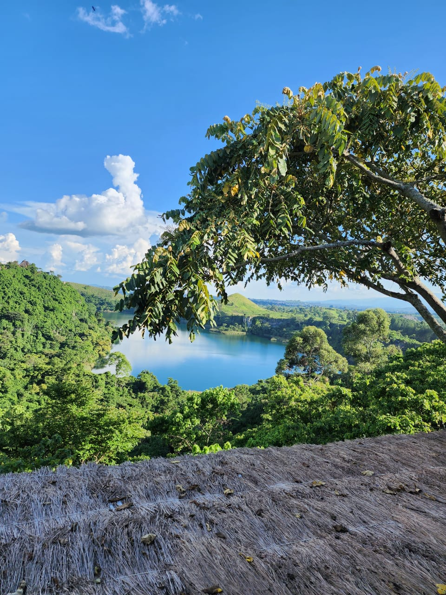
Crater LakesVolcanic lake viewpoints, cycling, hiking and sunset scenery.
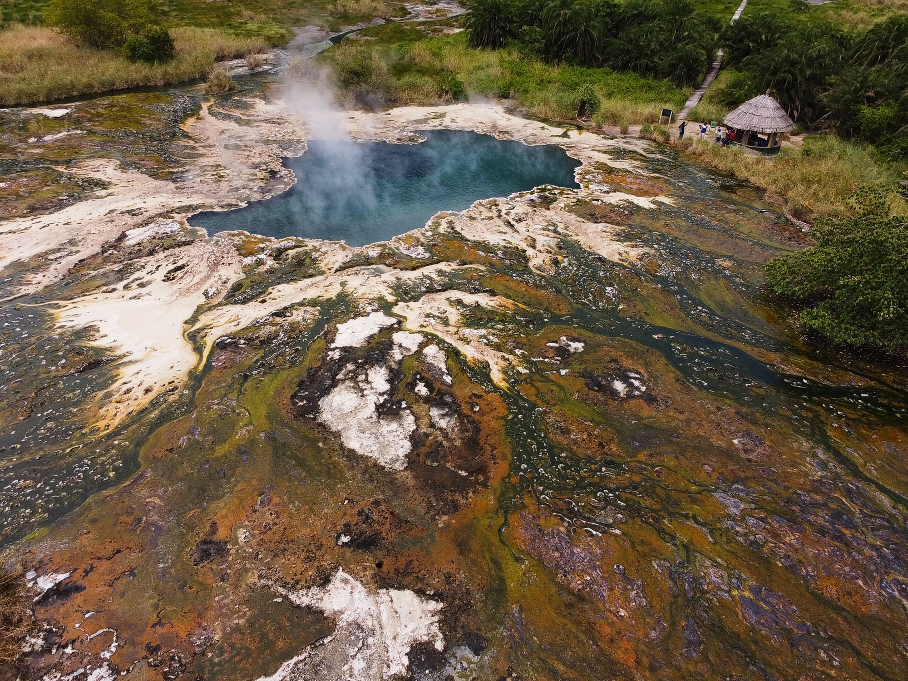
SemulikiSempaya hot springs, lowland forest, birding and cultural encounters.
Nearby Experiences
More tour sites within reach.
A wider circuit of wildlife, wetlands, culture, caves, gardens, waterfalls, and guided nature experiences around Fort Portal.
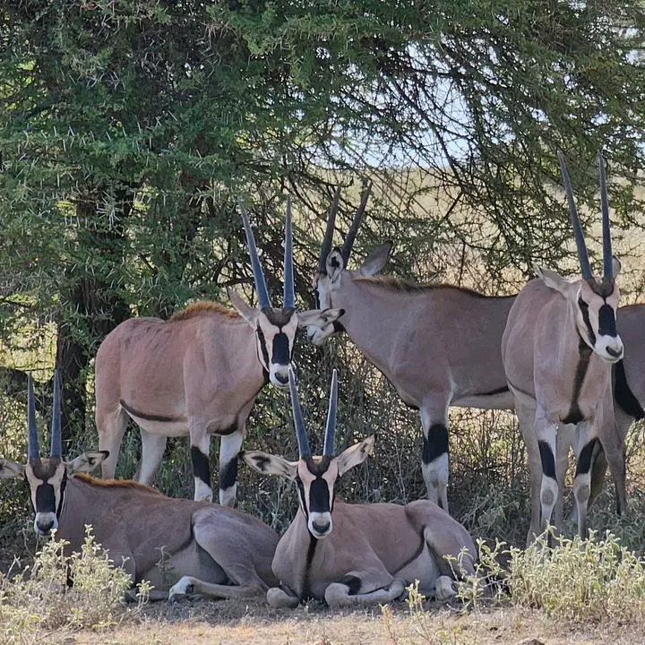
Queen Elizabeth
Game drives, Kazinga Channel boat cruises, savannah wildlife and Ishasha routes.
Bigodi Wetland
Guided nature walks, primate and bird watching, and community eco-tourism.
Toro Kingdom Sites
Karuzika Palace heritage, cultural performances, local crafts and traditions.
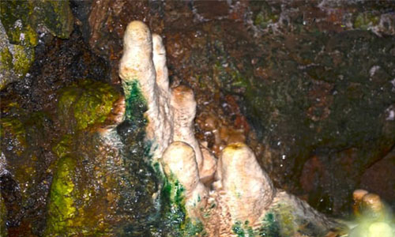
Amabere Caves
Caves, waterfalls, legends, guided cultural tours, nature walks and picnic stops.
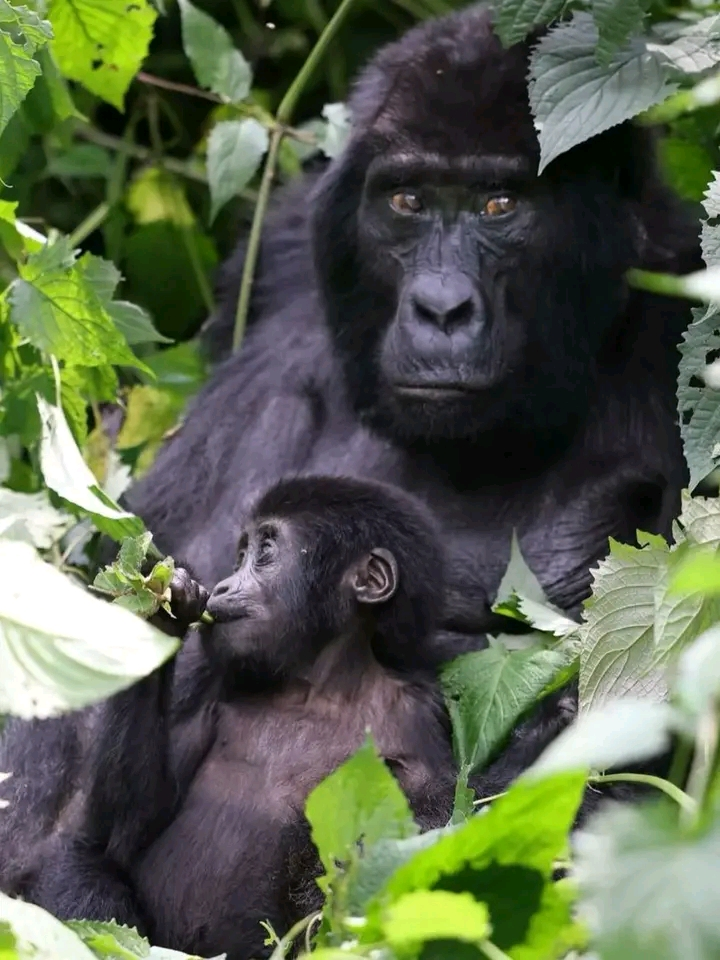
Nyakasura Hills
Short hikes, waterfalls, bird watching and panoramic Rwenzori range views.
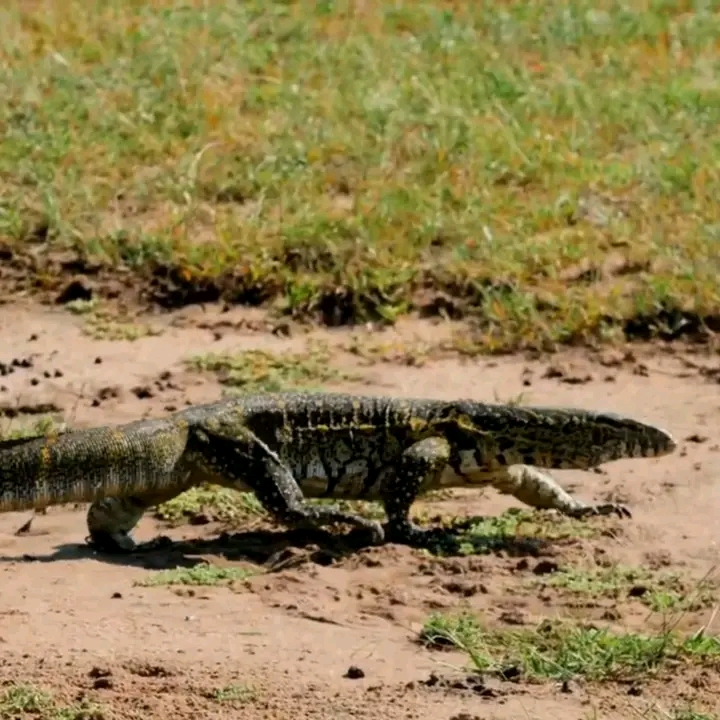
Lake Nkuruba
Canoeing, nature walks, swimming, birding and relaxed crater lake scenery.
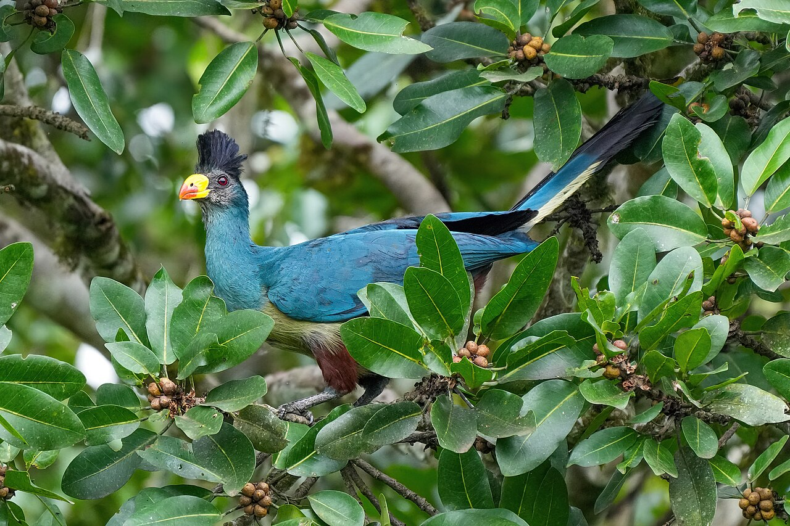
Tooro Botanical Gardens
Guided walks, indigenous plants, conservation learning and quiet garden time.
Fort Arch Eco LodgesBook Your Stay
Service Promise
Warm hospitality, practical comfort, and a calm Fort Portal stay.
Every guest should feel well received, well guided, and confidently looked after from arrival to departure.